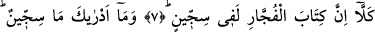
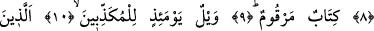
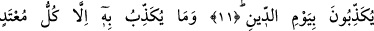
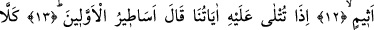
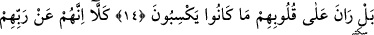
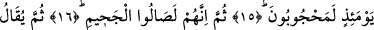
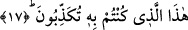

SİCCÎN NEDİR,
BİLİR MİSİN?
7. Doğrusu günahkârların yazısı, muhakkak Siccîn’de olmaktır.
8. Siccîn nedir, bilir misin?
9. (O günahkârların yazısı) amellerin sayılıp yazıldığı bir kitaptır.
10. O gün vay hâline yalancıların!
11. Ki onlar, cezâ gününü yalan sayarlar.
12. Onu ancak hükümleri çiğneyen ve günaha dalan kimseler yalanlar.
13. Böyle birine âyetlerimiz okununca «Eskilerin masalları» derdi.
14. Hayır! Bilakis onların işlemekte oldukları (kötülükler) kalplerini kirletmiştir.
15. Hayır! Onlar şüphesiz o gün Rablerinden (O’nu görmekten) mahrum
kalmışlardır.
16. Sonra onlar Cehenneme girerler.
17. Sonra onlara: «İşte yalanlamış olduğunuz (Cehennem) budur» denilir.
“Kellâ/Hayır” edatı, onların işledikleri haksızlıkları, öldükten sonra dirilmekten ve
hesaba çekilmekten gafletlerini red içindir. Dolayısıyla bu -âyet kırâat olunurken-
kelime üzerinde vakf yapmak güzel olur. Şâyet bu kelimeyi “hakkan/gerçekten”
anlamında alırsak o zaman kelime üzerinde vakf edilmez. Çünkü bu durumda kelime,
devamında gelen cümleye bağlı olmuş olur.
“Günahkarların yazısı, muhakkak Siccîn’de olmaktır.” Bu âyet-i kerime, yukarda
onlara karşı yöneltilen reddin sebebini ifâde etmektedir. Âyette geçen “kitap” kelimesi,
“yazılmış şey” anlamında masdardır; tıpkı “libas” kelimesinin giyilen eşya anlamına
masdar olması gibi. Ayrıca burada geçen “kitap” kelimesini, “kitâbet/yazmak”